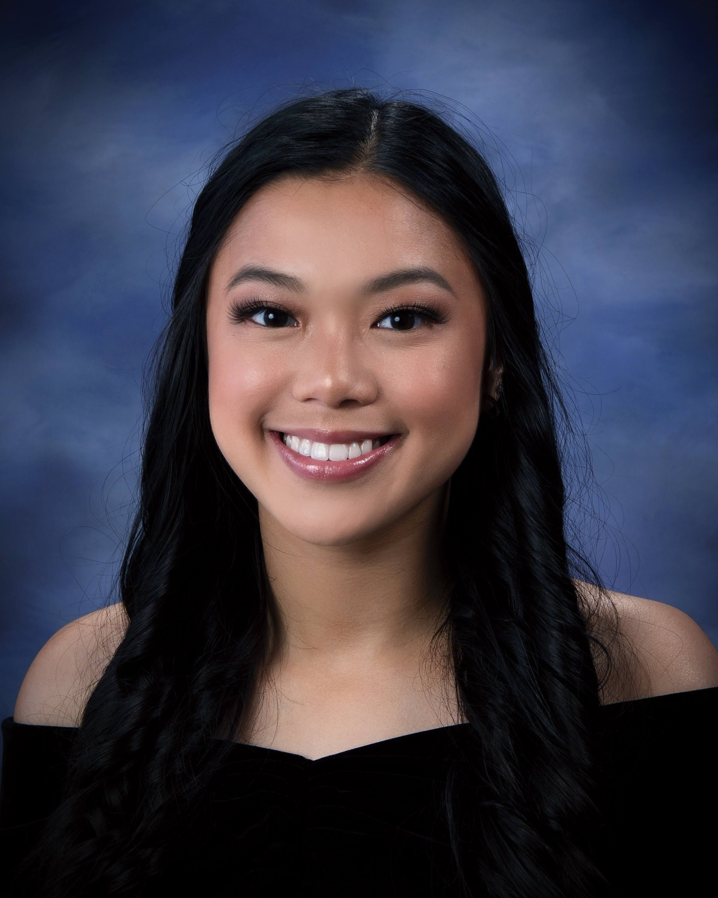

Valerie Wong
Computer Science Student @ UCR

📖 Education
- B.S. Computer Science - University of California, Riverside (2020-2024)
- High School Degree - Mercy High School, Burlingame (2016-2020)
💻 Work Experience
- ITS Help Desk Student Assistant - Information Technology Solutions, UCR (2023-Present)
- Provide campus support to faculty, staff, and students via phone as part of the campus Information Technology Solutions (ITS) Tier 1 Helpdesk
- Maintain accurate records of technical issues, resolutions, and user interactions
- Fitwell Attendant - Student Recreation Center, UCR (2021-2022)
- Ensured compliance with gym regulations and policies
- Upheld a high standard of cleanliness and hygiene through diligent patrol, weight retrieval, equipment sanitization, and replenishment of wipe stations
- Office Manager Assistant - Dexterity, Inc (2020)
- Facilitated the setup of onboarding desks and equipment
- Collaborated with the accounting department to review and update accounting policies as required
🤖 Project Experience
- Conceptual Mars Rover - Embedded Systems and Computer Architecture Senior Design Project (2024)
- Utilized the FPGA's input/output peripherals such as the LEDs and buttons to represent the movements of the rover
- Used the PYNQ API to display movements to a display screen using the FPGA's hdmi output using Jupyter Notebook and Python
- Designathon UI/UX Designer - Design@UCR (2023)
- Utilize Figma to create visually appealing and user-friendly website layouts
- Demonstrate strong teamwork and communication skills by collaborating with team members to ensure the successful execution of website design
- bitByBIT Website Developer - ACM@UCR (2023)
- Utilize Firebase to develop robust user authentication mechanisms
- Employ technologies such as Javascript, React.js, HTML, and CSS to ensure a visually appealing and responsive frontend design
- Driver Interface and Telemetry Engineer - UCR Solar Car (2022 - 2023)
- Developed wireless telemetry using Python to transmit and receive radio data for Grafana visualization with Arduino
- Ensured the design of an intuitive and highly-responsive GUI using C++
👍 Skills
- Programming Languages:
- C++
- Python
- Javascript
- HTML/CSS
- C#
- Tools/Technologies:
- Unity
- Github
- React.js
- Node.js
- QT Creator
- VSCode
- IDA
🔍 Subject Interests
Embedded Systems: I first developed an interest in embedded systems around 2022 when I took my first embedded systems course. I love combining hardware and software and being able to physically see my code come to life. That is the most rewarding part for me. I also have an interest in working with Arduino's and FPGA's and seeing how many cool things you can create with them.
Operating Systems: I am interested in regular expressions and how it can be used to create languages. I took my first operating systems course in 2024 and while the labs were a lot of work, I thoroughly enjoyed figuring out how to create rules to fit the language I created.